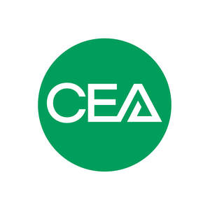

Trade Mark Journal No.2025/018 2 May 2025
UK00004163178 20 February 2025 (16,35,37,41,42,45)

- Class 16
- Printed matter; documents; forms; publications; booklets, books, brochures, catalogues, diaries, directories, guides, handbooks, journals, leaflets, bulletins, magazines, manuals, newspapers, notebooks, pamphlets, periodicals, technical and trade publications, trade and consumer information digests and workbooks; badges of cardboard and paper; instructional and teaching materials (except apparatus); advertising and publicity materials; bookmarks; calendars; posters; pens and pencils; all of the aforesaid relating to the construction industry; none of the aforesaid goods being for use in the fields of process technology and process engineering.
- Class 35
- Arranging, conducting and organizing exhibitions, meetings for trade purposes; data collection, processing and electronic data storage, statistical analysis; services for the promotion of trade for the construction industry; none of the aforesaid services being for use in the fields of process technology and process engineering.
- Class 37
- Services for the rental and repair of machinery for construction; rental and hire of construction equipment and machinery; provision of information relating to the construction industries; provision of construction advice and information; project preparation relating to construction engineering ; maintenance and repair of construction apparatus; construction engineering consultancy services; none of the aforesaid services being for use in the fields of process technology and process engineering.
- Class 41
- Arranging of exhibitions for training purposes; arranging, conducting and organizing seminars for trade purposes; publishing services, including electronic publishing; education and training services; provision of residential and non-residential training and educational courses; none of the aforesaid services being for use in the fields of process technology and process engineering.
- Class 42
- Research relating to construction equipment and machinery; technological advisory services relating to construction equipment and machinery; none of the aforesaid services being for use in the fields of process technology and process engineering.
- Class 45
- Legal advisory services; legal services; advisory services relating to statutory regulations, legislative standards and technical standards in the construction equipment industry; lobbying services; security services for the protection of property; none of the aforesaid services being for use in the fields of process technology and process engineering.
Construction Equipment Association
Representative: Hiddleston Trade Marks